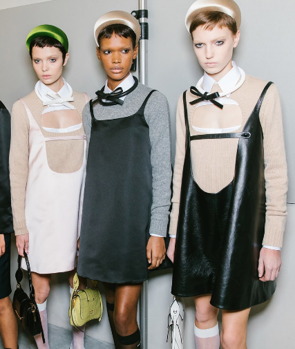

- VIEW ALL
- CELEBRITY STYLE
- SHOPPING
- STREET STYLE
- MODELS
- DESIGNERS
- TRENDS
Get Your Baby Doll On With These Short and Sweet Dresses for Fall
October 5, 2018
by BROOKE BOBB
edited by ISABELLA LALONDE

Hemlines were awfully short on the Spring 2019 runways this season. There were glammed-up minidresses galore in Hedi Slimane's debut collection for Celine and sexy short shorts at Saint Laurent. Even the avant-garde maestro Rick Owens proved that even he has an affiity for clothing that shows off a lot of leg. Elsewhere, the most popular mini silhouette seemed to be the baby doll. WHile Miuccia Prada rendered hers in a straigh-cut nylon, Riccardo Tisci took a more sweet and Anglo-focused approach with Peter Pan collars and polka dots. Giogia Tordini and Gilda Ambrosio have long been fans of the baby doll dress at Attico, and this season they did it again, with a floral-print design highlighted by its enormous balloon sleeves. And while none of this is available on the market for more than a few months, that doesn't mean the idea itself isn't relevant right at this very moment.
Believe it or not, the summery silhouetter is one of the more versatile pieces to try out for fall. Wear one with tghts or leggings, or with a cool cardigan, jacket, or blazer layered on top. A sweater or T-shirt underneath also works well. There are baby dolls of every king, too; printed, ruffled, slong-sleeved, sheer. So while they might not qualigy as "cozy," they certainly deserve a place in your transitional mix. Below, the 15 sweetest dresses to slip into right now.

Staud Kimberly satin midress, $250

Alexachung sleeveless denim dress, $316

Zimmermann floral-print pink dress, $745